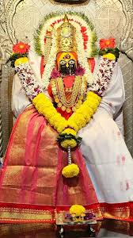

Siddheshwar Temple


Siddheshwar Temple is one of the most important spiritual landmarks in Solapur. Dedicated to Lord Siddheshwar, a form of Lord Shiva, the temple is located near the peaceful Siddheshwar Lake in the center of the city.
Thousands of devotees visit the temple every day. The temple becomes especially crowded during the Siddheshwar Yatra festival held every year in January.
Pandharpur


Pandharpur is one of the most sacred pilgrimage towns in Maharashtra and is located about 70 km from Solapur. It is famous for the Vitthal Rukmini Temple dedicated to Lord Vitthal.
The town becomes a major spiritual center during the Ashadhi and Kartiki Ekadashi festivals when millions of devotees participate in the Wari pilgrimage.
Tuljapur



Tuljapur is a famous pilgrimage destination located near Solapur and is known for the sacred Tulja Bhavani Temple. The temple is dedicated to Goddess Bhavani, who is worshipped by millions of devotees across Maharashtra.
The temple has great historical and religious significance and is believed to be one of the important Shakti Peethas. Devotees visit Tuljapur throughout the year to seek blessings of the goddess.
Akkalkot
Akkalkot is another important spiritual destination located about 40 km from Solapur. It is famous for the temple of Shri Swami Samarth Maharaj.
Devotees believe Swami Samarth blesses people and helps them overcome difficulties in life. The temple atmosphere is calm and peaceful, attracting visitors from all over the country.
Solapur Fort
Solapur Fort, also called Bhuikot Fort, is a historic monument located in the city. The fort was built during the Bahmani Sultanate period and later ruled by different dynasties.
The structure reflects the military architecture of medieval India and represents the rich historical heritage of Solapur.